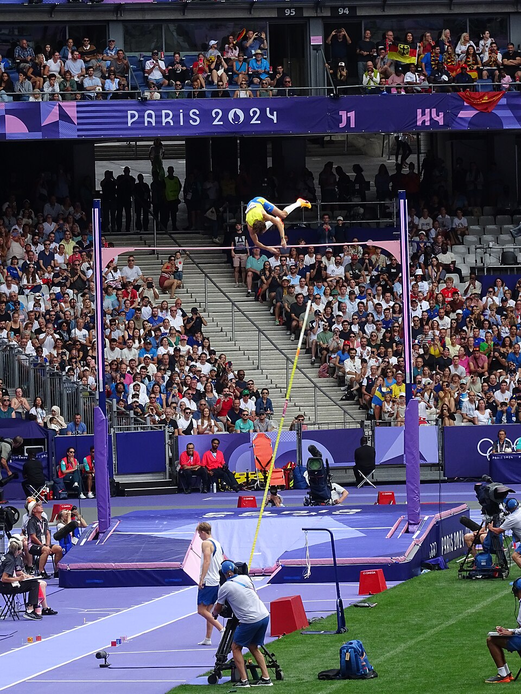

Poucos atletas conseguiram dominar uma modalidade com a autoridade de Mondo Duplantis. O sueco tornou-se campeão olímpico, acumulou títulos mundiais e passou a melhorar repetidamente o próprio recorde mundial da modalidade, elevando a prova a um patamar técnico que parecia distante até mesmo para seus maiores antecessores.
A trajetória de Duplantis combina talento precoce, formação familiar no atletismo, velocidade na corrida de aproximação, domínio técnico e uma capacidade incomum de competir sob pressão. Em vez de apenas vencer os adversários, ele transformou a luta contra a barra em seu principal desafio.
Seu impacto ultrapassou a prova. Duplantis tornou-se uma das principais estrelas do esporte olímpico, capaz de atrair a atenção do público mesmo depois de já ter assegurado uma medalha de ouro. Em suas competições, a disputa frequentemente ganha uma segunda final: primeiro ele supera os rivais; depois, tenta superar a si mesmo.
Quem é o atleta
Armand Gustav Duplantis nasceu em 10 de novembro de 1999, em Lafayette, no estado da Louisiana, nos Estados Unidos. Embora tenha crescido em território norte-americano, possui cidadania sueca por causa de sua mãe e escolheu representar a Suécia nas competições internacionais.
Mondo é o apelido pelo qual ficou conhecido desde a infância. Seu pai, Greg Duplantis, foi atleta do salto com vara e estudou na Louisiana State University, a LSU. Sua mãe, Helena Hedlund, representou a Suécia no heptatlo. O ambiente familiar, portanto, colocou o atletismo no cotidiano do futuro recordista desde muito cedo.
A família instalou uma estrutura de treinos, onde ele começou a desenvolver intimidade com a prova ainda criança. O que inicialmente parecia uma brincadeira tornou-se um processo constante de aprendizado. O pai Greg assumiu papel importante na parte técnica, enquanto a mãe Helena contribuiu para a preparação física e para a compreensão do esporte de alto rendimento.
A escolha pela Suécia
Duplantis tinha condições de competir tanto pelos Estados Unidos quanto pela Suécia. Ele escolheu defender o país materno antes do Mundial Sub-18 de 2015, disputado em Cali, na Colômbia.
A decisão criou uma relação profunda entre o atleta e a torcida sueca. Apesar da formação nos Estados Unidos, Mondo passou a ser tratado como uma das maiores figuras esportivas da Suécia. Com o avanço da carreira, também desenvolveu sua comunicação em sueco e fortaleceu a identificação com o país.
A primeira grande conquista internacional veio justamente em 2015. Ainda adolescente, Duplantis venceu o Mundial Sub-18 e mostrou que não era apenas uma promessa local. Na sequência, conquistou o Europeu Sub-20 de 2017 e o Mundial Sub-20 de 2018.
O salto que apresentou Mondo ao mundo
O grande ponto de virada da carreira aconteceu no Campeonato Europeu de 2018, em Berlim. Duplantis chegou à competição como um jovem extremamente talentoso, mas saiu como um dos maiores nomes do atletismo internacional.
Na final, superou 6,05 metros, conquistou o ouro e estabeleceu um recorde mundial sub-20. A marca também o colocou entre os melhores saltadores da história na categoria adulta. O desempenho teve ainda mais peso porque foi alcançado em uma grande decisão, contra atletas experientes e sob forte pressão.
Aos 18 anos, Duplantis tornou-se o mais jovem campeão masculino de uma prova de campo na história do Campeonato Europeu. Aquele resultado antecipou uma característica que seria recorrente em sua trajetória: não precisaria de anos de adaptação para responder em grandes eventos.
A passagem pela LSU
Antes de seguir integralmente como profissional, Duplantis competiu pela Louisiana State University em 2019. Sua passagem pelo atletismo universitário norte-americano foi curta, mas marcante.
Representando a LSU, venceu o título indoor da NCAA, conquistou os campeonatos indoor e outdoor da Southeastern Conference e estabeleceu recordes universitários. Chegou aos 5,92 metros em pista coberta e aos 6 metros ao ar livre, confirmando que já tinha nível para disputar as principais competições profissionais do mundo.
Depois da temporada universitária de 2019, tornou-se profissional. A escolha abriu espaço para uma rotina internacional mais ampla, com presença constante em etapas da Diamond League, grandes meetings europeus, Campeonatos Mundiais e Jogos Olímpicos.
O primeiro recorde mundial
Em 8 de fevereiro de 2020, em Toruń, na Polônia, Duplantis alcançou 6,17 metros e quebrou pela primeira vez o recorde mundial adulto. A marca anterior era de 6,16 metros, estabelecida pelo francês Renaud Lavillenie em 2014.
Apenas uma semana depois, em Glasgow, Mondo voltou a melhorar a marca. Superou 6,18 metros e confirmou que o primeiro recorde não havia sido um acontecimento isolado.
Os dois saltos mudaram definitivamente sua posição na modalidade. Duplantis deixou de ser apenas o jovem que poderia dominar o salto com vara no futuro. Aos 20 anos, já era o melhor saltador da história em termos de altura superada.
A primeira Olímpiada
Os Jogos Olímpicos de Tóquio, disputados em 2021, foram a primeira grande oportunidade de Duplantis transformar o domínio técnico em ouro olímpico.
O sueco confirmou o favoritismo e venceu a final com 6,02 metros. O norte-americano Chris Nilsen ficou com a prata, enquanto o brasileiro Thiago Braz conquistou o bronze. Mondo ainda tentou melhorar o recorde mundial, mas não conseguiu superar a altura colocada após garantir o título.
A medalha consolidou sua posição como principal nome da prova. O ouro olímpico também eliminou uma das poucas dúvidas que ainda poderiam existir: Duplantis já havia quebrado o recorde mundial, mas agora mostrava que também conseguia controlar uma final olímpica, na qual a colocação vale mais do que a marca.
A temporada histórica
O ano de 2022 foi um dos mais importantes da carreira. Duplantis venceu o Mundial Indoor em Belgrado, estabelecendo o recorde mundial de 6,20 metros. Meses depois, no Mundial ao ar livre em Eugene, conquistou o título com outro recorde, desta vez de 6,21 metros.
O sueco ainda venceu o Campeonato Europeu em Munique. Com títulos mundiais em pista coberta e ao ar livre, ouro europeu e duas melhorias do recorde mundial, completou uma temporada que demonstrou domínio em diferentes ambientes e formatos de competição.
A conquista em Eugene foi especialmente simbólica. Mondo garantiu seu primeiro título mundial adulto ao ar livre e terminou a final diante de um público norte-americano, no país onde nasceu e cresceu.
O domínio nos Mundiais
Depois do título em Eugene, Duplantis manteve a hegemonia nos Campeonatos Mundiais. Venceu novamente em Budapeste, em 2023, e conquistou o tricampeonato consecutivo em Tóquio, em 2025.
Na final japonesa, elevou o recorde mundial para 6,30 metros. O salto encerrou a competição de maneira espetacular: além de garantir o terceiro título mundial ao ar livre, Mondo voltou a estabelecer uma marca histórica em uma decisão global.
Em pista coberta, o domínio também se ampliou. Duplantis conquistou títulos mundiais indoor em Belgrado, Glasgow, Nanjing e Kujawy Pomorze/Toruń. Em março de 2026, chegou ao quarto ouro consecutivo no Mundial Indoor, vencendo com 6,25 metros, recorde da competição.
O segundo ouro
Os Jogos Olímpicos de Paris produziram uma das imagens mais importantes da carreira de Duplantis. O sueco dominou a final, garantiu o bicampeonato olímpico e, com o título já assegurado, pediu que a barra fosse colocada em 6,25 metros.
Após duas tentativas sem sucesso, superou a altura na terceira. O salto estabeleceu um novo recorde mundial e provocou uma grande celebração no Stade de France. Duplantis correu em direção à arquibancada, comemorou com familiares e transformou uma final já decidida em um dos momentos marcantes dos Jogos.
O resultado simbolizou a dimensão que Mondo havia alcançado. Em Paris, o público não acompanhava apenas a definição do campeão olímpico. A expectativa era saber até onde ele conseguiria levar o limite humano no salto com vara.
A evolução dos recordes
Desde 2020, Duplantis passou a elevar o recorde mundial centímetro por centímetro. Essa progressão não diminui o tamanho de suas conquistas: cada nova marca exige uma competição válida, controle técnico e execução perfeita em uma altura nunca superada oficialmente.
A evolução das marcas:
- 6,17 metros — Toruń, Polônia — 8 de fevereiro de 2020
- 6,18 metros — Glasgow, Reino Unido — 15 de fevereiro de 2020
- 6,19 metros — Belgrado, Sérvia — 7 de março de 2022
- 6,20 metros — Belgrado, Sérvia — 20 de março de 2022
- 6,21 metros — Eugene, Estados Unidos — 24 de julho de 2022
- 6,22 metros — Clermont-Ferrand, França — 25 de fevereiro de 2023
- 6,23 metros — Eugene, Estados Unidos — 17 de setembro de 2023
- 6,24 metros — Xiamen, China — 20 de abril de 2024
- 6,25 metros — Paris, França — 5 de agosto de 2024
- 6,26 metros — Chorzów, Polônia — 25 de agosto de 2024
- 6,27 metros — Clermont-Ferrand, França — 28 de fevereiro de 2025
- 6,28 metros — Estocolmo, Suécia — 15 de junho de 2025
- 6,29 metros — Budapeste, Hungria — 12 de agosto de 2025
- 6,30 metros — Tóquio, Japão — 15 de setembro de 2025
- 6,31 metros — Uppsala, Suécia — 12 de março de 2026
A última marca conquistada foi em casa no Mondo Classic, competição realizada em Uppsala. Foi a 15ª vez que Duplantis quebrou o recorde mundial adulto do salto com vara.
Principais títulos consquistados
Jogos Olímpicos:
- Tóquio 2020 — medalha de ouro
- Paris 2024 — medalha de ouro
Campeonatos Mundiais ao ar livre:
- Eugene 2022
- Budapeste 2023
- Tóquio 2025
Campeonatos Mundiais indoor:
- Belgrado 2022
- Glasgow 2024
- Nanjing 2025
- Kujawy Pomorze/Toruń 2026
Campeonatos Europeus ao ar livre:
- Berlim 2018
- Munique 2022
- Roma 2024
Duplantis também conquistou títulos europeus indoor e acumulou cinco troféus consecutivos da Diamond League entre 2021 e 2025. A regularidade no circuito é relevante porque exige alto rendimento ao longo de toda a temporada, e não apenas em uma competição isolada.
Como funciona o salto com vara
Na modalidade, o atleta corre por uma pista de aproximação carregando uma vara flexível. Ao chegar à caixa de encaixe, posiciona a vara, transforma a velocidade horizontal da corrida em impulso vertical, eleva o corpo, gira sobre o equipamento e tenta ultrapassar a barra sem derrubá-la.
Cada saltador pode escolher em qual altura deseja iniciar. Depois, possui até três tentativas para superar cada marca. Três erros consecutivos eliminam o competidor, embora o atleta possa deixar uma altura passar mesmo após uma ou duas falhas.
O desempenho depende de uma combinação complexa de fatores:
- Velocidade na corrida de aproximação
- Precisão no encaixe da vara
- Força e impulsão na decolagem
- Controle corporal durante a inversão
- Escolha correta da vara
- Confiança para atacar alturas extremas
- Capacidade de ajustar a técnica durante a competição
Duplantis se destaca por unir uma corrida rápida a movimentos extremamente eficientes. Sua técnica permite aproveitar a energia produzida na aproximação sem perder controle na fase mais delicada do salto.
A velocidade é uma das principais armas de Mondo. Ele chega ao ponto de encaixe em ritmo próximo ao de um velocista, criando grande quantidade de energia antes da decolagem. Entretanto, correr rápido não seria suficiente sem precisão técnica.
Duplantis consegue encaixar a vara, elevar o corpo e ultrapassar a barra com fluidez. Também possui consciência espacial apurada, atributo essencial para perceber a posição do corpo enquanto está de cabeça para baixo e a vários metros do chão.
Outro diferencial é a experiência acumulada desde a infância. Quando chegou ao circuito profissional, Mondo já havia repetido os movimentos da prova durante milhares de sessões de treinamento. Isso ajudou a transformar gestos complexos em ações naturais.
A parte mental também pesa. Duplantis frequentemente tenta recordes depois de passar várias horas competindo, garantir o título e enfrentar sucessivas alturas. Mesmo nessas condições, consegue reorganizar a concentração para executar o salto mais difícil da noite.
A transformação do salto com vara
Antes de Duplantis, o salto com vara já havia produzido lendas como Sergey Bubka e Renaud Lavillenie. Bubka foi responsável por uma revolução técnica e quebrou recordes sucessivamente durante as décadas de 1980 e 1990. Lavillenie, por sua vez, alcançou 6,16 metros em 2014 e encerrou um longo período de domínio das marcas de Bubka.
Mondo abriu uma nova era. Ele não apenas ultrapassou os dois, mas tornou frequentes os saltos acima dos 6 metros. Em diversas competições, o sueco garante a vitória e continua sozinho na pista, tendo como adversário apenas a altura do recorde mundial.
Essa capacidade de criar expectativa tornou o salto com vara uma das grandes atrações da história moderna do atletismo e das competições olímpicas. Mesmo quem não acompanha a prova regularmente entende o significado de ver um atleta tentando alcançar uma altura jamais superada.
A dimensão de Mondo Duplantis fica ainda mais clara quando sua trajetória é colocada ao lado de outras lendas que fizeram do atletismo algo maior do que uma sequência de provas e resultados. Usain Bolt transformou a velocidade em espetáculo global, unindo recordes, domínio esportivo e um carisma capaz de prender a atenção do mundo durante poucos segundos. Em outra fronteira da modalidade, Eliud Kipchoge redefiniu os limites da maratona, fazendo dos 42,195 quilômetros uma busca quase filosófica por resistência, disciplina e superação humana.
Duplantis ocupa esse mesmo território reservado aos atletas que ultrapassam a própria especialidade. Assim como Bolt fez o público esperar por uma explosão de velocidade e Kipchoge transformou cada maratona em uma tentativa de ampliar os limites do corpo, Mondo converteu o salto com vara em espetáculo. Quando os adversários deixam a pista e a barra sobe para uma altura inédita, sua competição deixa de ser apenas contra outros atletas: passa a ser contra a história, a física e a ideia do que parecia possível no esporte.
O recorde possível ou impossível
A possibilidade de Duplantis alcançar 6,40 metros tornou-se uma das grandes perguntas do atletismo. A distância até a marca ainda é significativa em uma prova na qual cada centímetro exige aperfeiçoamento técnico, físico e mental.
Ao mesmo tempo, sua evolução indica que novos recordes são possíveis. Duplantis levou a marca mundial de 6,17 para 6,31 metros e conseguiu manter alto nível durante diferentes temporadas. Sua consistência, aliada à idade competitiva e ao domínio técnico, mantém aberta a discussão sobre onde estará o limite definitivo.
Não existe garantia de que os 6,40 metros serão alcançados. Fatores como condições climáticas, pista, vento, escolha das varas, desgaste físico e saúde influenciam cada tentativa. Ainda assim, Duplantis já transformou alturas antes consideradas extraordinárias em parte de sua rotina competitiva.
O legado do atleta
Mondo Duplantis já ocupa um lugar central entre os maiores nomes da história do atletismo. O bicampeonato olímpico, os títulos mundiais, a sequência de conquistas na Diamond League e as repetidas quebras do recorde mundial formam um currículo raro.
Seu legado, porém, não depende apenas das medalhas. Duplantis ajudou a tornar uma prova altamente técnica mais compreensível e atraente para o grande público. Sua presença cria expectativa, transforma meetings em eventos globais e faz com que milhares de pessoas acompanhem a posição de uma barra colocada a mais de seis metros do chão.
O sueco construiu uma carreira na qual vencer passou a ser apenas a primeira parte do espetáculo. Depois dos adversários, vem o recorde. Depois de um recorde, surge outro centímetro. É essa busca constante que colocou Mondo Duplantis no topo do salto com vara e entre os atletas mais dominantes de sua geração.